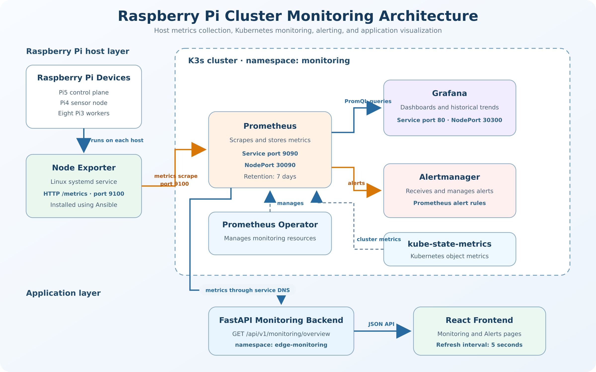
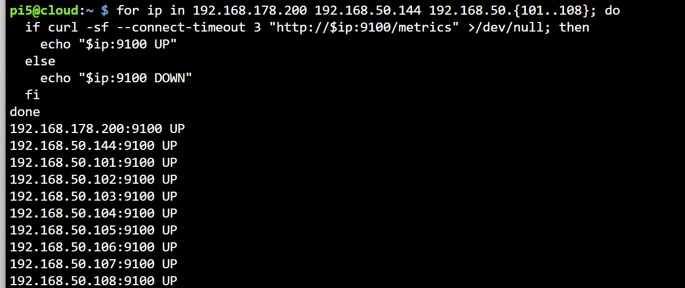
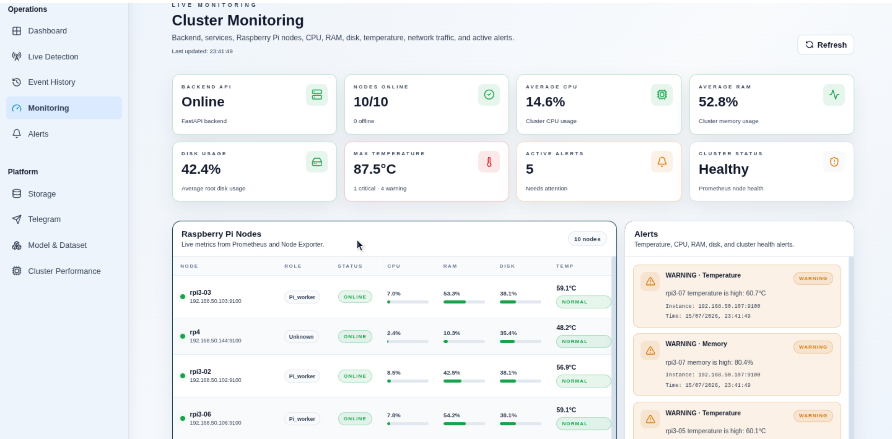
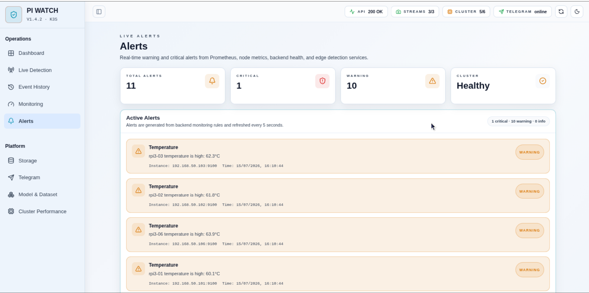

Raspberry Pi Cluster Monitoring
System-level documentation for monitoring the Edge-Computing Intrusion Detection System.
Status: Completed and verified
Platform: Raspberry Pi 5 control plane, Raspberry Pi 4 sensor node, eight Raspberry Pi 3 workers, and K3s
Related documentation: Prometheus · Grafana
1. Purpose
The monitoring system observes the health and performance of the Raspberry Pi cluster while intrusion detection, image processing, storage, and inference workloads are running. It helps identify:
- Node failures and connectivity loss
- CPU or memory pressure
- Low disk capacity
- High temperature or overheating
- Network bottlenecks
- High system load
- Backend and service failures
The system provides infrastructure-level visualization through Grafana and application-ready monitoring data through the FastAPI backend and React frontend.

2. Monitoring Components and Responsibilities
| Component | Responsibility |
|---|---|
| Node Exporter | Exposes Linux host metrics on port 9100. |
| Prometheus | Scrapes, stores, queries, and evaluates time-series metrics. |
| Grafana | Displays current and historical metrics through dashboards. |
| Alertmanager | Manages alerts produced by Prometheus rules. |
| kube-state-metrics | Exposes Kubernetes workload and object metrics. |
| FastAPI | Converts Prometheus data into frontend-ready JSON. |
| React frontend | Displays cluster health, node metrics, and alerts. |
For detailed setup and deployment steps, see Prometheus and Grafana.
3. Node Exporter deployment with Ansible
Node Exporter runs directly on each Raspberry Pi as a Linux systemd service and exposes host metrics on port 9100. Ansible is run from Pi5 to install and configure the exporter consistently on the eight Pi3 workers.
The Kubernetes Node Exporter component remains disabled because the host-level exporters already occupy port 9100.
3.1 Prerequisites
Install Ansible on Pi5:
Confirm that Ansible is available:
From Pi5, verify SSH access to one Pi3 worker before running the playbook:
Exit the remote session after confirming access:
3.2 Create the Ansible inventory
Create inventory.ini in the same directory as the playbook:
[rp3_nodes]
rpi3-01 ansible_host=192.168.50.101
rpi3-02 ansible_host=192.168.50.102
rpi3-03 ansible_host=192.168.50.103
rpi3-04 ansible_host=192.168.50.104
rpi3-05 ansible_host=192.168.50.105
rpi3-06 ansible_host=192.168.50.106
rpi3-07 ansible_host=192.168.50.107
rpi3-08 ansible_host=192.168.50.108
[rp3_nodes:vars]
ansible_user=pi
ansible_python_interpreter=/usr/bin/python3
Confirm that Ansible can parse the inventory:
The output must contain the rp3_nodes group and all eight Pi3 hosts. If Ansible reports No inventory was parsed or no hosts matched, stop and correct the inventory path before continuing.
Test connectivity without changing the nodes:
Each node should return SUCCESS and ping: pong.
3.3 Create the Node Exporter playbook
Create install-node-exporter.yml beside inventory.ini:
---
- name: Install Prometheus Node Exporter on all RP3 nodes
hosts: rp3_nodes
become: true
gather_facts: true
tasks:
- name: Update apt package cache
ansible.builtin.apt:
update_cache: true
cache_valid_time: 3600
- name: Install Prometheus Node Exporter
ansible.builtin.apt:
name: prometheus-node-exporter
state: present
- name: Enable and start Prometheus Node Exporter
ansible.builtin.systemd:
name: prometheus-node-exporter
enabled: true
state: started
The playbook:
- Updates the apt package cache when required.
- Installs the
prometheus-node-exporterpackage. - Enables the
prometheus-node-exporterservice at boot. - Starts the service if it is not already running.
Validate the playbook syntax without changing any node:
3.4 Deploy Node Exporter on new or unconfigured Pi3 nodes
Only run this command when deployment or repair is actually required:
After deployment, confirm the service on a Pi3 worker:
ssh pi3@192.168.50.101 \
"systemctl is-enabled prometheus-node-exporter && systemctl is-active prometheus-node-exporter"
Expected output:
The correct Debian service name is prometheus-node-exporter. A command such as systemctl status node_exporter may report that the unit does not exist.
3.5 Verify the existing exporters safely
The following commands are read-only and do not restart, reinstall, or modify the working exporters.
Test one Pi3:
Test Pi4:
Test Pi5 locally:
Test Pi5, Pi4, and all eight Pi3 workers together:
for ip in 192.168.50.1 192.168.50.144 192.168.50.{101..108}; do
if curl -sf --connect-timeout 3 "http://$ip:9100/metrics" >/dev/null; then
echo "$ip:9100 UP"
else
echo "$ip:9100 DOWN"
fi
done
All ten addresses should report UP.
The final monitoring addresses are:
| Device | Node Exporter address |
|---|---|
| Pi5 control plane | 192.168.50.1:9100 |
| Pi4 sensor node | 192.168.50.144:9100 |
| Pi3-01 to Pi3-08 | 192.168.50.101:9100 to 192.168.50.108:9100 |
Only 192.168.50.1:9100 is used for Pi5 so the same device is not counted twice through another network address.
The following screenshot may be used as read-only availability evidence. Crop out any failed Ansible attempt and retain only the command and ten UP results.

4. Prometheus collection and monitoring flow
After Node Exporter was verified on Pi5, Pi4, and the eight Pi3 workers, Prometheus was configured to scrape the metrics exposed on port 9100.
Prometheus runs inside the K3s monitoring namespace and collects metrics from all Raspberry Pi hosts every 15 seconds. It stores the data as time-series metrics, supports PromQL queries, and evaluates alert rules.
The FastAPI backend does not query Node Exporter directly. Instead, it queries Prometheus through the internal Kubernetes service:
http://prometheus-kube-prometheus-prometheus.monitoring.svc.cluster.local:9090
## 5. FastAPI monitoring integration
The FastAPI backend queries Prometheus and returns normalized data for the frontend.
```http
GET /api/v1/monitoring/overview
The endpoint returns:
- Backend status
- YOLO and Telegram service status
- Total, online, offline, and degraded nodes
- Per-node CPU, memory, disk, and temperature data
- Temperature health status
- Network receive and transmit rates
- Load averages and uptime
- Disk capacity information
- Active alerts
- Prometheus query errors
The backend deployment is named backend in namespace edge-monitoring.
kubectl set env deployment/backend \
-n edge-monitoring \
PROMETHEUS_URL=http://prometheus-kube-prometheus-prometheus.monitoring.svc.cluster.local:9090
Verify the deployment and configuration:
kubectl rollout status deployment/backend \
-n edge-monitoring \
--timeout=5m
kubectl exec -n edge-monitoring deployment/backend -- \
printenv PROMETHEUS_URL
Test Prometheus connectivity from the backend:
kubectl exec -n edge-monitoring deployment/backend -- \
python -c "import urllib.request; print(urllib.request.urlopen('http://prometheus-kube-prometheus-prometheus.monitoring.svc.cluster.local:9090/-/ready').read().decode())"
Test the monitoring endpoint:
kubectl exec -n edge-monitoring deployment/backend -- \
python -c "import urllib.request; print(urllib.request.urlopen('http://127.0.0.1:8000/api/v1/monitoring/overview').read().decode())"
Temporary local service access:
In another terminal:
Expected result:
IMAGE PLACEHOLDER — Monitoring API
Suggested file:images/monitoring/monitoring-api-response.png
Add a successful JSON response from/api/v1/monitoring/overview.
6. Backend health thresholds
| Resource | Warning | Critical |
|---|---|---|
| Temperature | 60°C | 70°C |
| CPU | 80% | 90% |
| Memory | 80% | 90% |
| Disk | 80% | 90% |
Application-level alerts include:
- Node offline
- High CPU usage
- High memory usage
- High disk usage
- High temperature
- Critical temperature
7. React frontend integration
The React frontend calls the monitoring endpoint every five seconds. A manual refresh button executes the same request immediately.
The interface displays:
- Backend and Prometheus status
- YOLO and Telegram service status
- Online and total node counts
- Average CPU and memory utilization
- Disk utilization
- Maximum temperature and temperature health
- Active alerts and cluster status
- Per-node CPU, memory, disk, temperature, network, load, uptime, and health information
Verification:
- Open the Monitoring page.
- Open browser developer tools.
- Select the Network tab.
- Find
/api/v1/monitoring/overview. - Confirm HTTP
200. - Confirm automatic refresh and the manual refresh button.


8. Result
The monitoring implementation is complete. Node Exporter exposes system metrics from Pi5, Pi4, and the eight Pi3 workers. Prometheus collects the metrics inside K3s, Grafana visualizes live and historical data, Alertmanager manages health alerts, and the FastAPI backend supplies normalized monitoring information to the React frontend.